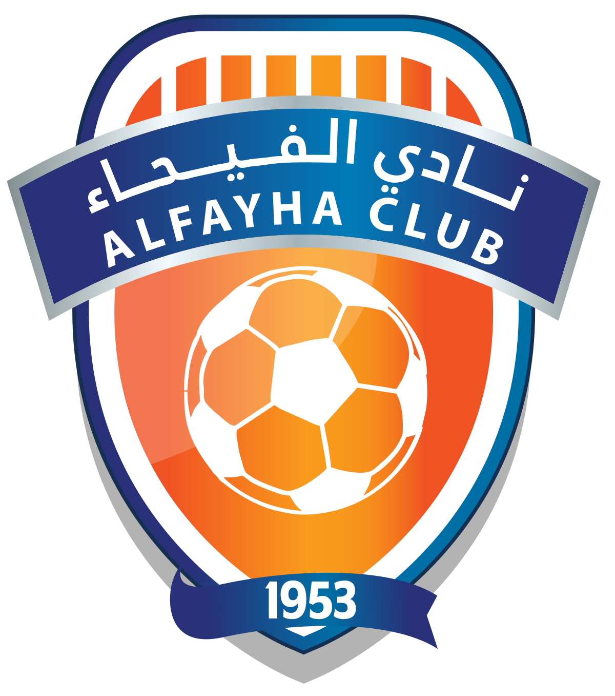

الفرق
هذه هي الفرق المشاركة في دوري روشن السعودي للموسم 2024-2025:
الهلال
التأسيس: 1957
المدينة: الرياض
الإنجازات: الهلال هو الفريق الأكثر تتويجًا بالألقاب في تاريخ المملكة العربية السعودية.
الاتحاد
التأسيس: 1927
المدينة: جدة
الإنجازات: واحد من الأندية العريقة في السعودية وأحد الفرق التي حققت بطولات آسيوية.
النصر
التأسيس: 1955
المدينة: الرياض
الإنجازات: فاز بالعديد من البطولات المحلية والدولية.
الشباب

التأسيس: 1947
المدينة: الرياض
الإنجازات: يتميز بلقب "الليوث" وله قاعدة جماهيرية كبيرة.
القادسية
التأسيس: 1967
المدينة: الخبر
الإنجازات: حقق العديد من البطولات المحلية.
الأهلي
التأسيس: 1937
المدينة: جدة
الإنجازات: يُعتبر من أعرق الأندية في المملكة وله تاريخ طويل في البطولات.
الخليج
التأسيس: 1967
المدينة: الدمام
الإنجازات: يشارك بانتظام في دوري المحترفين.
التعاون
التأسيس: 1956
المدينة: بريدة
الإنجازات: حقق العديد من البطولات المحلية.
الرياض
التأسيس: 1955
المدينة: الرياض
الإنجازات: فريق قديم له تاريخ طويل.
ضمك
التأسيس: 1952
المدينة: خميس مشيط
الإنجازات: أحد الفرق الصاعدة للمشاركة في دوري المحترفين.
الرائد
التأسيس: 1954
المدينة: بريدة
الإنجازات: من أقدم الأندية في المملكة.
الاتفاق
التأسيس: 1945
المدينة: الدمام
الإنجازات: من الفرق التي حققت العديد من الألقاب المحلية.
العروبة
التأسيس: 1976
المدينة: سكاكا
الإنجازات: من الأندية الصاعدة حديثًا.
الأخدود
التأسيس: 2006
المدينة: نجران
الإنجازات: . فريق حديث في الدوري
الخلود
التأسيس: 2002
المدينة: المجمعة
الإنجازات:. نادي صاعد حديثًا
الفيحاء
التأسيس: 1955
المدينة: المجمعة
الإنجازات: فريق حقق نجاحات محلية.
الوحدة
التأسيس: 1945
المدينة: مكة المكرمة
الإنجازات: . ايعتبر من الأندية العريقة في المملكة
الفتح

التأسيس: 1958
المدينة: الأحساء
الإنجازات: من الفرق التي حققت العديد من البطولات المحلية.